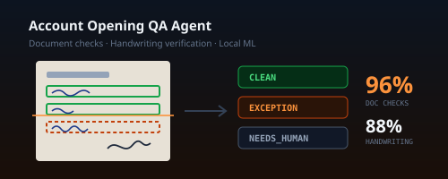

Account Opening QA Agent
An AI quality-assurance agent that checks scanned account-opening packs for missing documents, data mismatches and signature issues — running entirely on locally run machine-learning models, so no client data ever leaves the bank.
Summary Overview
The problem
Every new account comes with a pack of scanned documents: application forms filled in by hand, identity documents, photographs and signatures. Checkers read each pack in full to confirm that everything required is present and legible, and that what the customer wrote matches what was keyed into the core banking system. It is slow, repetitive work — exactly where an automated first pass can help, provided it never quietly lets a bad file through.
How it works
- Assemble the pack — merge the scans into one file per customer and set aside clearly blank pages, logging each one.
- Classify every page by its printed header, trying rotations, and check quality: blur, skew, orientation.
- Align and read — each page is aligned onto its form template, fields are cropped, printed text is read with OCR, and handwriting is verified against the keyed value rather than transcribed.
- Check the signatures and ticks — signature slots are checked for presence, and the checklist is reconciled against the documents actually present.
- Cross-check three ways — handwritten form, printed sheet and system record must agree.
- Route with evidence — every file comes out
CLEAN,EXCEPTION,NEEDS_HUMANorERROR, with each finding carrying the page, the location on the page, both values that disagreed and the rule that fired.

Why a pipeline, not a chatbot-style agent
It is called an agent, but it is built as a deterministic pipeline. A compliance control has to give the same answer on the same file two years later, cite its evidence, and fail loudly rather than decide that a file “looks fine”. AI models are used only to read handwriting — never to make the pass/fail decision. It is a control, not a decision-maker: it routes files to people and never approves or rejects an account.
Why everything runs locally
There are no cloud document-AI services, hosted vision APIs or third-party KYC vendors involved. Keeping everything on the bank's own machines keeps the build inside Zambia's Data Protection Act, and makes the software licence cost zero.
Results so far
- Printed fields, page types and checklist ticks are read at 96–100% accuracy on packs the system had never seen.
- 88% of genuine handwritten fields are confirmed without a person.
- Automatic signature comparison was measured twice and not adopted — instead the checker sees the signatures side by side. Knowing when not to automate is part of the job.
- A separate check needs no OCR at all: accounts opened in the system minus packs on file gives the list of files that were never uploaded.
My role
I scoped, designed and built it end to end with agentic coding: the measurement plan, the pipeline, the rules, and the evaluation on frozen test sets. The headline efficiency gain depends entirely on the false-positive rate — if the agent over-flags, checkers read the whole pack anyway — so every stage is measured before it is trusted.
Status
In its feasibility phase: the full first pass runs end to end on a folder of packs, and the next step is a shadow run alongside the checking team before anything goes live.